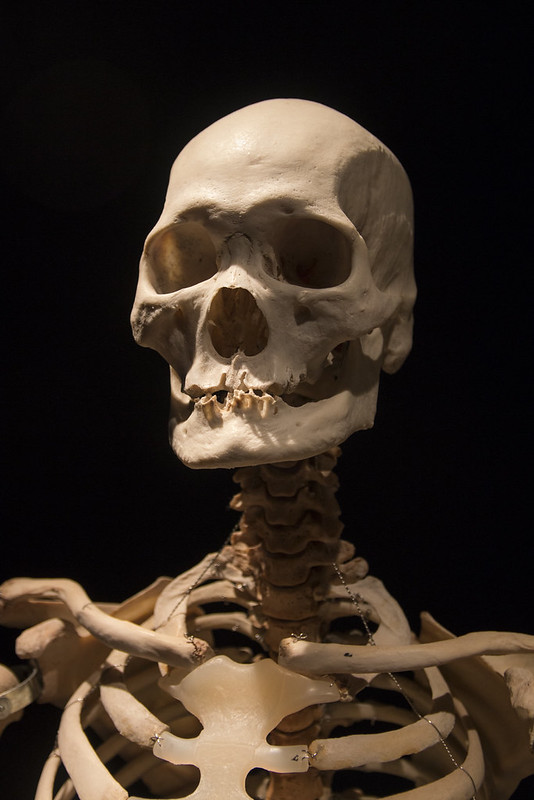

Chapter 2: Show us the candy!
=======Chapter 2: Too late for candies?
>>>>>>> 1070d839f63451f7f59f5425c14897b499b1db85 Previous chapter7 hours later...
When Cathy got back with their dog, Anthony and Jim had already left. While Lisa was standing in front of the mirror adjusting their wires, Anthony was sitting on the hallway floor wondering whether the stay or whether they should ask their mum for an extra advice.
"Oh finally!" the child sighed when Cathy, dressed as a fairy, opened the front door. "What took you so long?" the child asked.
"It took longer than I thought", Cathy moaned in frustration holding dog dressed as football. "How was it? Did you it while I was gone?" Cathy asked.
"Cool. But stop! Otherwise we'll get apples or something when people run out of candy", Anthony snapped, stood up and straightened their awesome costume. "Come on, let's go!"
Several minutes later...
"Oh my. Our neighbors were already almost out of candy!", Anthony huffs and shoots an angry look at Cathy.
"We could go to Yläkaskenkuja", Cathy proposes. "They are quite a few houses there and most kids don't go there."
"Yeah because daa!", the child states worried look on their face. They won't admit it to their friends but they are actually a little bit afraid of the dark.
"What's the big deal? You're not afraid of the the dark, are you?", someone smirks.
"Of course I'm not!" the child scoffs but looks still nervous.
"Well let's just go then! Let's get that candy!" somebody says sounding firm. They start leading the group towards new houses. the child hesitates for a minute and then sprints after the others.